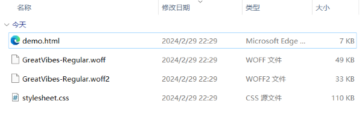

- 个人学习通资料区下载字体文件压缩包：Great_Vibes和Roboto
- 或自行准备喜欢的字体文件，如谷歌字体
- 本地使用 -不推荐
- 将字体文件转换成小程序可以识别的格式，再导入到项目中
- 特点：加载快，渲染速度也快；但是会增加项目的体积
- 字体转换 - 以Great_Vibes为例
-
下载Great_Vibes到本地并解压，得到字体文件GreatVibes-Regular.ttf；默认情况下，字体不支持base64，需要转码
转换完毕，单击下载downl，得到字体文件压缩包，解压后如下图；拷贝样式文件到小程序，修改文件后缀名为.wxss

在小程序中，查看字体样式文件：定制了字体家族：Great Vibes
@font-face {
font-family: 'Great Vibes';
src: url('.....');
}
在小程序样式中引入字体样式文件并使用；字体略小，可以指定为20px
@import '../../utils/transfonter.org-20240229-142749/stylesheet.wxss';
text{
font-family: 'Great Vibes';
font-size: 20px;
}
- 在线使用 - 推荐
- 将字体文件放在资源服务器上，提供给项目在线使用
- 在小程序中定制字体，从资源服务器上获取字体文件
- 特点：不占用小程序体积；但是速度略慢，特别是中文字体
- 注意：同HTML不同的是
- 1. 不要指定格式 format('ttf')
- 2. 字体大小和字重等其它属性在使用时指定
- 只有一个字体文件 - 以GreatVibes为例
-
@font-face {
font-family: 'GreatVibes';
src: url(http://127.0.0.1:3000/font/Great_Vibes/GreatVibes-Regular.ttf);
}
- 多个类型的字体文件 - 以Roboto字体为例
-
@font-face {
font-family: 'Roboto';
src:
url(http://127.0.0.1:3000/font/Roboto/Roboto-Light.ttf),
url(http://127.0.0.1:3000/font/Roboto/Roboto-Bold.ttf),
url(http://127.0.0.1:3000/font/Roboto/Roboto-Italic.ttf);
}
-
使用在线字体，需要将其域名加入到request合法域名中
在线使用会提示：[渲染层网络层错误] Failed to load font http://127.0.0.1:3000/font/GreatVibes-Regular.ttf
net::ERR_CACHE_MISS ；可以忽略
- 拓展
- 从 大树小站 拉取字体文件，自己定制字体
- 利用 - 大树小站 - 提供的在线字体，完成字体定制和使用 - 注意大小写。。。
-
CruiserFortressBevel - https://glpla.github.io/fonts/CruiserFortressBevel.ttf
FlappyBird - https://glpla.github.io/fonts/FlappyBird.ttf
Great Vibes - https://glpla.github.io/fonts/Great_Vibes/GreatVibes-Regular.ttf
Michroma - https://glpla.github.io/fonts/Michroma/Michroma.ttf
Monospace - https://glpla.github.io/fonts/Monospace/Elronmonospace.ttf
Poppins - https://glpla.github.io/fonts/Poppins/Poppins-Regular.ttf
Quicksand - https://glpla.github.io/fonts/Quicksand/Quicksand-Regular.ttf
Roboto - https://glpla.github.io/fonts/Roboto/Roboto-Regular.ttf
yuwei - https://glpla.github.io/fonts/YuWei/YuWeiShuFaXingShuJianTi.ttf